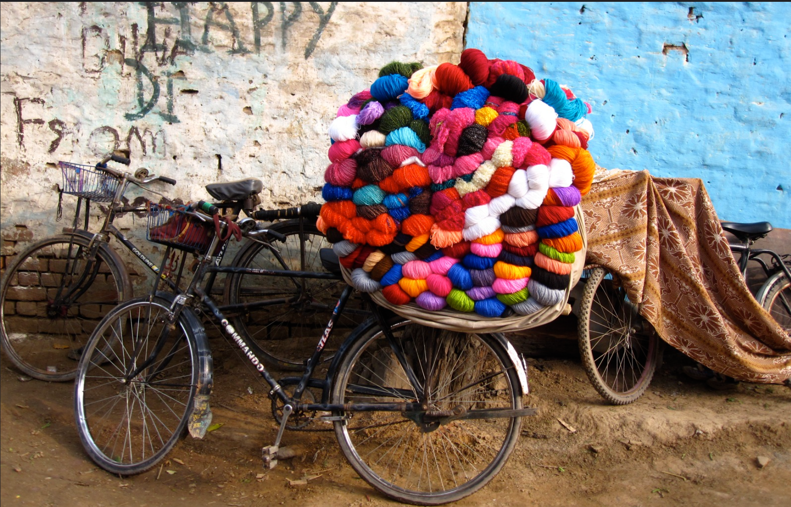

When I was growing up, I was surrounded by women.
Housewives. Doctors. Electricians. Grandmothers. And obviously, my mum.
In the afternoons, they’d all gather. Sometimes in the shade. Sometimes in the weak winter sun. Kashmiri shawls over shoulders. Hand-knitted mittens. Scarves loosely wrapped around hair. Mehendi staining palms and greying roots while the gossip did its rounds.
There was always a soundtrack.
The click of knitting needles. The soft pull of yarn from a basket. Complicated new styles being made up on the spot — no patterns, no instructions, just instinct and decades of knowing.
At the time, I thought this was just… normal.
I thought every kid grew up in rooms full of women who laughed too loudly, shared food without asking, argued about colours, and quietly held each other together when things got hard.
If you asked me where the safest place in the world is, it’s that. It will always be that.
What I didn’t clock at the time was that it was my mum’s safest place too.
I didn’t get it then — that she wasn’t just hosting people. She was surviving in that circle. Finding her breath in it. Drawing strength from women who showed up without being asked.
And then there were the days when it wasn’t just one woman popping round for chai.
It was all of them.
Because the oon wala was coming.
The yarn man
Now look — I didn’t realise this wasn’t how the rest of the world worked. In India, especially in my little town, shopping came to you. Milk. Vegetables. Sometimes tablecloths. And obviously, wool.
Basically Deliveroo version one. No app. No algorithm. Just a bloke on a bike who somehow always knew when you were running low.
And then he’d appear.
The skinniest man you’ve ever seen, riding a bike that had clearly survived several lifetimes. Brakes? Barely. Gears? Absolutely not. Just pure determination and zero fear of physics.
And on the back of that bike?
A towering, perfectly stacked, colour-coded mountain of oon.

Reds bleeding into pinks into oranges. Blues fading into greens. Creams and browns stacked like calm in the middle of chaos. All held down with what I can only describe as faith and maybe one piece of rope.
He’d stop. And the women would descend.
Honestly, the street came alive.
They negotiated. They haggled. They discussed thickness and texture like it was a board meeting and they were all the CEO.
“Too fine for a shawl.” “Double it up.” “That colour will wash her out.” “No no no — mix it with this one.”
Out came little newspaper cuttings — patterns they’d saved and folded from weeks before. Someone would remember someone else mentioning a cardigan in passing and the clipping would get passed across before anyone even asked.
Doctor. Housewife. Electrician. Grandma.
No hierarchy. No titles. No one asking permission to have an opinion.
The oon wala arrived and everyone needed their fix.
And then, just like that — gone.
Back into their houses. Back into their lives. Carrying colour under their arms and ideas in their heads.
The world carried on. Stitch by stitch.
When I think about it now, I properly smile.
That man on that collapsing bike delivered more than wool.
He delivered possibility. Conversation. Belonging. An excuse to stand in the street with your people and feel like you had everything you needed.
And maybe that’s why, years later, I feel this pull to get women round a table again.
Maybe I’m not building something new at all.
Maybe I’m just trying to get back to the safest place I’ve ever known.
And honestly? If a yarn man turned up on my street tomorrow with a skyscraper of colour strapped to a questionable bike?
I’d be outside in seconds. Slippers on. No questions asked.
Forget Prime delivery.
Some things don’t need upgrading.
D x